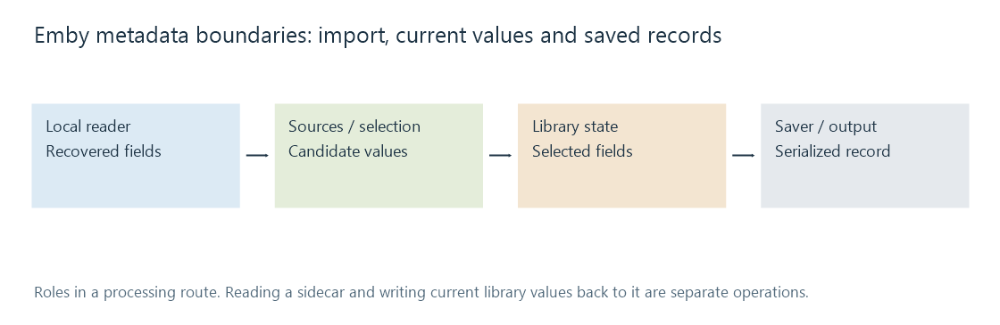

Metadata providers in Emby Server
Emby's metadata route combines supported local readers, remote providers, field selection and optional saving, with library context and installed integrations determining the available operations.
An Emby library can obtain information through local records and configured remote sources. The selected content type gives those operations an entity context, such as movie, episode or music item.
Readers, providers and savers occupy different boundaries
| Role | Work |
|---|---|
| Local reader | Recover supported fields from an associated resource |
| Remote provider | Search or retrieve catalogue information |
| Image provider | Supply artwork candidates/resources |
| Selection/merge | Determine current library values |
| Saver | Serialize supported library data to a chosen output |

The public NFO source exposes parsing of title, original title, sort title and scoped identifiers. Its presence demonstrates an implementation, not that every imaginable NFO field has a mapping in every installed version.
Reading a sidecar also is not a guarantee that a later database edit has been written back into it.
Refresh names an operation
Metadata Manager documents refreshing missing information versus replacing metadata, with a separate image-replacement choice. It also describes protection through field or item locks.
That separates three questions: whether a source was consulted, whether it supplied a usable candidate, and whether the selected operation allowed that candidate to replace an existing value.
Precedence develops a field-level model. The actual provider/library configuration supplies the product-specific ordering and behavior; this page does not invent one universal priority list.
Correct identity before comparing descriptions
A wrong match can yield internally consistent title, synopsis, date and artwork for another work. Rearranging provider priority does not make that record describe the local film.
Conversely, a correct identity can yield different localized labels or edition artwork. Compare the field's intended scope rather than treating every differing string as a bad match.
Inspect the boundary that is missing
If text was imported but artwork is absent, inspect the image reference/retrieval/selection. If a local field remains in its file but is absent in the library, inspect association and mapping. If an edited value reappears after refresh, compare selected operation and protection state.
A current investigation uses the server/integration version and the relevant library configuration. These observations make the documented editing workflow specific without turning Learn into a duplicate click-by-click setup guide.
See Also
- How metadata providers work
- NFO metadata files
- Metadata precedence
- Missing metadata
- Media artwork roles